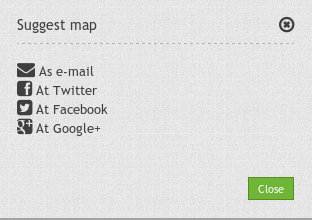
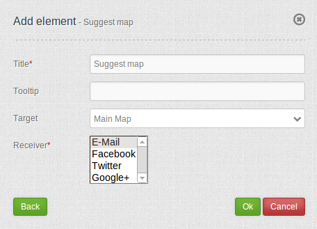

Suggest Map¶
Notice: that you need the element WMC Editor to use this functionality.
Notice: that all configurations are pubic at the moment. Later in development we want to add access control to this module too.
{kind=link}
Configuration¶
{kind=link}
- Title: Title of the element. The title will be listed in “Layouts” and allows to distinguish between different buttons. It will be indicated if “Show label” is activated.
- Tooltip: text to use as tooltip.
- Target: Id of Map element to query.
- Receiver: element to use (E-Mail, Facebook, Twitter, Google+)
YAML-Definition:¶
title: Suggest Map
tooltip: Suggest Map # text to use as tooltip
icon: iconSuggestMap # choose an icon
label: true # add title as label
target: wmceditor # choose wmceditor as target
action: open #
deactivate: close #
You need a button to show this element. See Button for inherited configuration options.
Class, Widget & Style¶
- Class: Mapbender\WmcBundle\Element\SuggestMap
- Widget: <Put Widget name here>
- Style: <Put name of css file here>